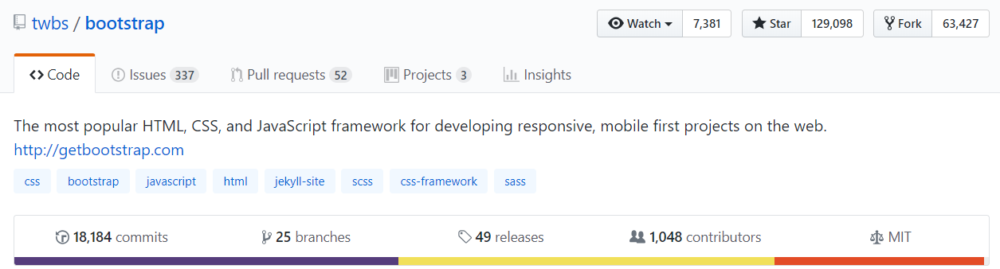

CSS frameworks
CSS framework
- pre-prepared software framework
- for easier, more standards-compliant web design
- using CSS language
- A framework is a standardized set of concepts, practices and criteria for dealing with a common type of problem, which can be used as a reference to help us approach and resolve new problems of a similar nature.


Reasons to use frameworks
- reset style sheet
- cross-browser compatibility
- grid
- responsive web design
- web typography, set of icons in sprites or icon fonts
- styling for tooltips, buttons, elements of forms, accordion, tabs, slideshow or modal
- css preprocessors
- time
disadvantages
- increase load time
- sites look common
- unnecessary code
- predetermined class/ID names
How to choose
- support and updates
- suitable for the scale of your project and for possible expansion in the future
- documentation

| Bootstrap | Foundation |
|---|---|
| CSS Preprocessor | |
| support for Less ended with Bootstrap 3 | |
| Customization | |
| more flexibility out of the box | |
| Total filesize of every component and class weighs in at 60KB CSS & 84KB JS, is possible to remove unused components selectively. | |
| Browser Support | |
| for IE8, you’ll have to settle for Bootstrap v3.3.6 | IE9+ |
| Grid System | |
| first go for the “mobile-first” approach, responsive design and a fully fleshed out grid system. | |
| From Foundation v6.4, the Flex Grid is disabled by default. For IE 10, it is recommended to use the XY Grid | |
| Features | |
| responsive emails that look great on any device and all of the major email clients | |
| include paid content (themes) | |
similar features
- Open-sourced
- Sass
- 12-column grid system
- “Mobile-first” responsive design
- Optional Flexible Box
- ES6 JavaScript components and plugins
- IE9+
- Pre-styled, ready-to-use UI components
pick Bootstrap if you value speed and stability, and Foundation if you’re in need of more flexibility